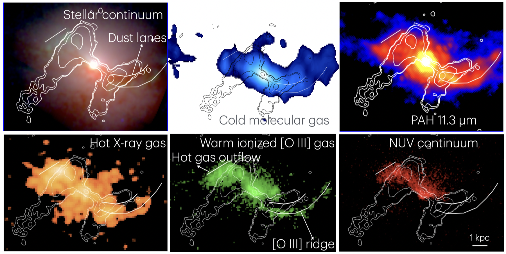

First author · 3C 305 · 2026
JWST resolves jet-driven H₂ and ionized outflows
JWST MIRI/MRS, NIRSpec, NIRCam, and MIRI imaging show shocks at both jet-termination hotspots. Warm molecular H₂ outflows reach about 400 km s⁻¹, while ionized gas reaches roughly 1,000 km s⁻¹. Shock diagnostics and the energy budget indicate highly efficient local jet coupling: the jet shock-heats and accelerates dense gas, driving massive kiloparsec-scale multiphase outflows.
Read the 3C 305 paper ↗